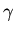

Here is the list of my key collaborators who I worked with for some time and with whom I authored papers jointly. As everyone is on the move in this hectic world, the current affiliation of those people can be different from what it used to be when we worked together.
| Miron Amusia | 1980-1990 | Many-body theory Hebrew University of Jerusalem | |
| Igor Bray | 1995-present | Atomic collision theory Murdoch University of Western Australia. | |
| Klaus Bartschat | 1999-present | Theory of two-electron ionization Drake University, Des Moines, Iowa | |
| F. Aryasetiawan | 1999-present | Many-electron correlations in solids RICS, Tsukuba | |
| Alan Lun | 1998-1999 | Electronic structure of solids University of Colorado at Boulder |
| Maarten Vos | 1995-present | EMS on solids, Australian National University | |
| Michael Ford | 1995-present | EMS on solids Flinders University of South Australia |
|
| Alexander Dorn | 2000-present | (e,3e) on atoms MPI for Nuclear Physics, Heidelberg |
|
| Reinhard Döoerner | 1998-present | (  ,2e) on atomsNuclear Physics Institute, University of Frankfurt |
|
| A. Lahmam- Bennani |
1995-present | (e,3e) on atoms LCAM , Université de Paris-Sud | |
| Friedhelm Bell | 1995-present | (
,e)
spectroscopy on solids University of Munich | |
| Giovanni Stefani | 1997-1998 | (e,2e) on solids INFM, Università di Roma Tre |